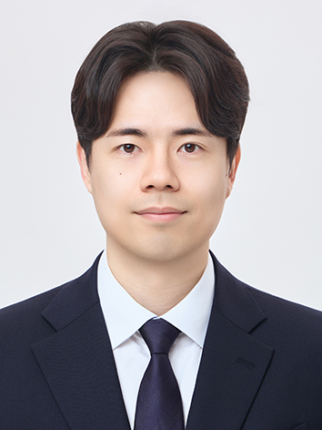

Dynamics & Diophantine Approximation
Dimension and exceptional sets — Hausdorff dimension of weighted singular vectors and matrices, Diophantine approximation on fractal sets, and connections with homogeneous dynamics.
Department of Mathematics
Assistant Professor
Sookmyung Women's University
Dynamics, topology, and AI.
I am an Assistant Professor in the Department of Mathematics at Sookmyung Women's University. My research connects dynamics, probability, and topology with artificial intelligence (AI) and topological data analysis (TDA). Current interests include Diophantine approximation, random topology, AI on graphs, and mathematical methods for semiconductor design.

01 / News
Gave a colloquium at Konkuk University, Department of Mathematics Education: “Research and Learning in the AI Era: A Mathematician’s Experience”
Gave an invited lecture at Hongik University, College of Education: “Research and Learning in the AI Era: A Mathematician’s Experience” Announcement ↗
Hanyang University, Department of Mathematics — Mathematics Colloquium: “What Can Mathematicians Do in Semiconductors and AI?” Announcement ↗
Awarded an NRF Basic Research B grant for finite-step kernel-based structural encodings for circuit graph neural networks (Sep 2026-Aug 2027)
Sookmyung Women’s University, Department of Mathematics — Summer School: Geometry and Applications: “AI That Learns, Creates, and Acts: Five Mathematical Ideas That Changed AI”
Chonnam National University — Workshop on Pure and Applied Mathematics: “Hausdorff Dimension of Singular Vectors: From Weights to Fractals”
KIAS–KWMS — Summer School 1: “Singular vectors in simultaneous Diophantine approximation: results and methods”
Seoul National University, Computer-Aided Design Laboratory — 3rd Korea EDA Workshop: “The Spectrum of a Circuit: Rethinking EDA through the Graph Laplacian”
Circular Coordinates for Density-Robust Analysis published in Foundations of Data Science, Vol. 9, pp. 137–163 (June 2026) DOI ↗
Chung-Ang University, Department of Mathematics — Mathematics Seminar: “From Equations to Massive Circuit Networks: Next-Gen Semiconductor Design (EDA) Innovation Led by Graph Theory and AI”
Pusan National University — Geometry & Topology Seminar: “Equivalence of Boundary Measures on Metric Graphs and Extensions to Hyperbolic Buildings”
BADGE published in the DATE 2026 proceedings DOI ↗
Sookmyung Women’s University, Department of Statistics — Spring Invited Lecture Series: “From Equations to Massive Circuit Networks: Next-Gen Semiconductor Design (EDA) Innovation Led by Graph Theory and AI”
Joined Sookmyung Women's University as Assistant Professor of Mathematics
BADGE accepted at DATE 2026 (Verona, Italy)
02 / Research
Dimension and exceptional sets — Hausdorff dimension of weighted singular vectors and matrices, Diophantine approximation on fractal sets, and connections with homogeneous dynamics.
Random walks, boundaries, and shape — Entropy and boundary measures on graphs and trees; topology of random samples; topological data analysis (TDA), including persistent cohomology and density-robust geometric methods.
Graph structure for AI — Spectral and probabilistic representations, graph neural networks and graph transformers, with applications to electronic design automation (EDA) and circuit modeling.
From graph structure to physical design — Graph-based and generative AI methods for placement, inverse lithography, and circuit modeling, with a current interest in structure-preserving simulation.
03 / Profile
2026.03 – present
Department of Mathematics, Sookmyung Women's University
2024.12 – 2026.02
AI Center, Samsung Electronics
Research on AI for semiconductor design and verification.
2023.03 – 2024.11
Samsung Advanced Institute of Technology (SAIT)
Research on AI for semiconductor design and verification.
2017 – 2023
Seoul National University
Advisor: Lim Seonhee
Dissertation: Dynamical Invariants and Measures on Metric Graphs and Applications in Medical Science
2011 – 2017
Chung-Ang University
DATE 2026 (Design, Automation and Test in Europe), Verona, Italy, pp. 1–3
Foundations of Data Science, Vol. 9, pp. 137–163 (June 2026)
ICCAD 2025, pp. 1–8
ICML 2025, Proceedings of Machine Learning Research, Vol. 267, pp. 33688–33714
Mathematika, Vol. 70, No. 3, Article e12252
DAC 2024, Article 237, pp. 1–6
Frontiers in Neuroscience, Vol. 16, Article 1028776
JACC: Cardiovascular Imaging, Vol. 15, No. 6, pp. 974–986
Human Brain Mapping, Vol. 42, No. 12, pp. 4059–4073
No papers match this search. Try another title or select All.
05 / Talks
Konkuk University, Department of Mathematics Education — 2026 제3차 미래교사 콜로키움
Hongik University, College of Education — 인공지능과 교육 환경 변화와 대응 특강
Hanyang University, Department of Mathematics — Mathematics Lecture
Sookmyung Women's University, Department of Mathematics — 2026 Summer School: Geometry and Applications
2026 Workshop on Pure and Applied Mathematics
2026 KIAS–KWMS Summer School 1: Diophantine approximation and the Heisenberg group
3rd Korea EDA Workshop
Chung-Ang University, Dept. of Mathematics — Seminar
Pusan National University — Geometry & Topology Seminar
Sookmyung Women's University, Dept. of Statistics — 2026-1학기 초청강연회 (Series, Lecture 1 of 4)
Sookmyung Women's University, Dept. of Mathematics — Winter Seminar (2025학년도 겨울학기)
2021 KMS Spring Meeting — Applied Mathematics (AM) session
2020 KMS Spring Meeting — Applied Mathematics (AM) session
06 / Funding
2026.09 – 2027.08
National Research Foundation of Korea (NRF) · Principal Investigator
07 / Teaching
Sookmyung Women's University
Sookmyung Women's University
Sookmyung Women's University
Sookmyung Women's University